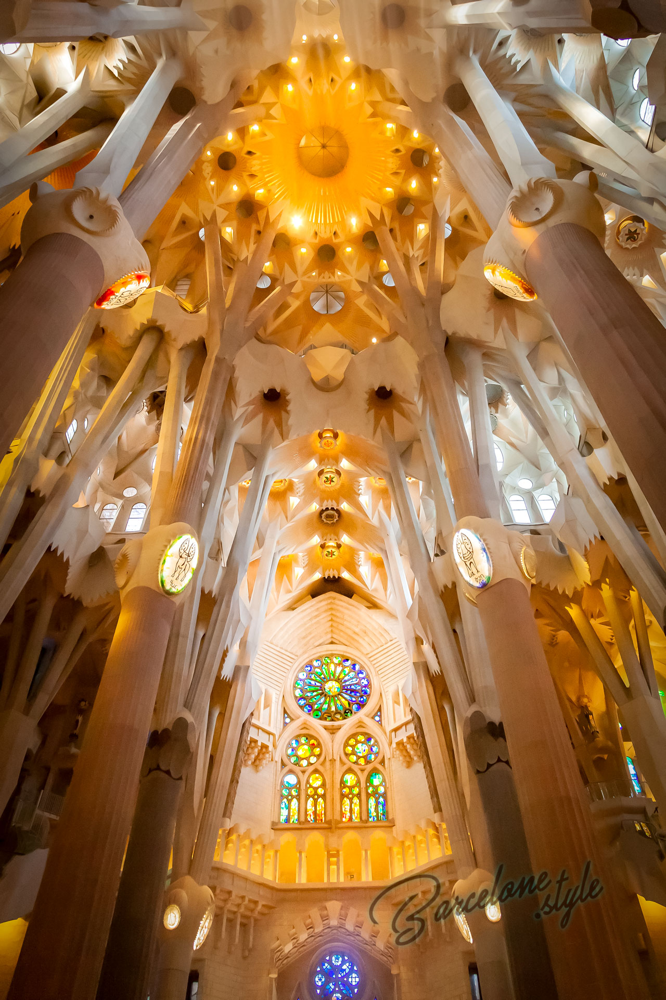

L’origine de la Sagrada Familia est situés autour de 1866 quand une congrégation de dévots de Saint-Joseph a pensé à construire un temple en son honneur. La première pierre fut posée en 1882, le 19 Mars, la fête de San José, au milieu d’un terrain de 12.000 mètres carrés. Le premier architecte était Don Francisco de Paula del Villar y Lozano mais bientôt il abandonne le projet en raison de désaccords.Un an plus tard Antonio Gaudi avait pris la direction des travaux. Et il a commencé à créer un rêve entre l’humain et le divin. Gaudí est mort en 1926 en ne voyant que la la première des dix-huit tours prévues, la construction desquelles finira en 2026.La construction n'est toujours pas finis mais le lieux est devenue un lieux tres touristique avec une moyenne de 12 897 visiteur chaque jours.Quam ob rem vita quidem talis fuit vel fortuna vel gloria, ut nihil posset accedere, moriendi autem sensum celeritas abstulit; quo de genere mortis difficile dictu est; quid homines suspicentur, videtis; hoc vere tamen licet dicere, P. Scipioni ex multis diebus, quos in vita celeberrimos laetissimosque viderit, illum diem clarissimum fuisse, cum senatu dimisso domum reductus ad vesperum est a patribus conscriptis, populo Romano, sociis et Latinis, pridie quam excessit e vita, ut ex tam alto dignitatis gradu ad superos videatur deos potius quam ad inferos pervenisse.
Nam sole orto magnitudine angusti gurgitis sed profundi a transitu arcebantur et dum piscatgdh gbjsogsdbjisdngghjsnuighuisginsejkgbsjddb ghjbeuhvygbhioergisdfuhgsdiogjsigusjgjsjgçijsigjsrç_orios quaerunt lenunculos vel innare temere contextis cratibus parant, effusae.